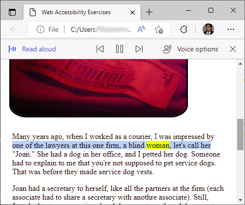

Screen readers read a page to the user.
There are a couple of different ways to activate the screen reader in Microsoft Edge. The easiest, at least for me, is the keyboard shortcut Ctrl-Shift-U.
As you can see in the screenshot, Edge highlights the word it's reading in yellow, and the rest of the line in blue.
TODO: Write about other browsers
TODO: Write about other specialized programs